学习目标
阅读理解task_struct数据结构
分析fork函数对应的内核处理过程sys_clone，理解创建一个新进程如何创建和修改task_struct数据结构
使用gdb跟踪分析一个fork系统调用内核处理函数sys_clone ，验证对Linux系统创建一个新进程的理解
特别关注新进程是从哪里开始执行的？为什么从哪里能顺利执行下去？即执行起点与内核堆栈如何保证一致。
基础知识
进程
进程是任何多道程序设计的操作系统额基本概念，进程的定义就是程序执行的一个实例，也是系统资源调度的最小单位。进程有三种状态：
- 运行。进程在CPU上执行，或等待被执行（会被调度）。
- 停止。进程被挂起（不会被调度）。收到 SIGSTOP 、 SIGTSTP 、 SIDTTIN 、 SIGTTOU 信号，进程停止，收到 SIGCONT 信号，进程再次开始运行。
- 终止。进程永远停止。原因可能是：收到终止进程的信号，从主程序返回，调用 exit 函数。
创建新进程可以使用 fork 函数。新创建的子进程和父进程几乎相同，它获得父进程用户级虚拟地址空间和文件描述符的副本，主要区别是它们的PID不同。 fork 函数调用一次，返回两次；父子进程是并发运行的，不能假设它们的执行顺序；两个进程的初始地址空间相同，但是是相互独立的；它们还共享打开的文件。
进程终止时，并不会被立即清除，而是等待父进程回收，称为僵死进程。父进程回收终止的子进程时，内核将子进程退出状态传给父进程，然后抛弃该进程。如果回收前父进程已经终止，那么僵死进程由 init 进程回收。
回收子进程可以用 wait 和 waitpid 等函数。
内核调用 execve 函数在当前进程的上下文中加载并运行一个新程序。 execve 加载 filename 后，调用启动代码，启动代码准备栈，将控制传给新程序的主函数 int main(int argc, char *argv[],char *envp[]) 。下面是用户栈的典型组织：

fork函数在新的子进程中运行相同的程序，新的子进程时父进程的复制品。execve函数在当前进程的上下文中加载一个新的程序，它会覆盖当前进程的地址空间，但并没有创建一个新进程，新的程序仍然有相同的PID，并且继承了调用execve函数时已打开的所有文件描述符。
当创建一个进程的时候，实际上系统就是在复制了父进程的几乎所有信息包括代码。子进程接收父进程地址空间的一个逻辑拷贝，然后，这个子进程会从创建进程那个系统调用服务代码之后的下一条指令开始执行（ret_from_fork），执行代码与父进程是相同的。
进程创建使用的是fork这个命令。fork先是调用find_empty_process为子进程找到一个空闲的任务号，然后调用copy_process复制进程,fork返回copy_process的返回值last_pid，也就是子进程号。从上面的实现看来，fork的返回值不会是0，上面的逻辑正是父进程的执行逻辑。对于子进程，先看子进程的初始状态，copy_process中创造了子进程的上下文执行环境，这个上下文环境正是父进程fork系统调用时的环境，其中p->tss.eip正是被赋值为fork之后下一条指令地址，这就是子进程和父进程都返回到fork下一条指令处的原因。同时p->tss.eax被赋了值0，当调度到子进程开始执行时，首先加载其上下文环境，eip被加载为fork之后下一条指令，eax就被加载为0，所以，对于子进程来说，和父进程唯一的区别就是返回值（eax）为0。
task_struct是进程描述符。操作系统通过task_struct感知进程的存在。该结构体在内核中的位置：./include/Linux/sched.h
struct task_struct {
volatile long state; //描述进程的状态。这儿有个关键词volatile是告诉编译器不要对其优化
//编译器有一个缓存优化的习惯，比如说，第一次在内存取数，编译器发现后面还要用这个变量，于是把这个变量的值就放在寄存器中。
//这个关键词就是要求编译器不要优化，每次都让CPU去内存取数。以确保状态的变化能及时地反映上来。
void *stack;//内核堆栈
//···
#ifdef CONFIG_SMP//多处理器相关信息
struct llist_node wake_entry;
int on_cpu;
struct task_struct *last_wakee;
unsigned long wakee_flips;
unsigned long wakee_flip_decay_ts;
int wake_cpu;
#endif
//···
//···
//进程调度相关信息
int on_rq;
int prio, static_prio, normal_prio;
unsigned int rt_priority;
const struct sched_class *sched_class;
struct sched_entity se;
struct sched_rt_entity rt;
#ifdef CONFIG_CGROUP_SCHED
struct task_group *sched_task_group;
#endif
struct sched_dl_entity dl;
//···
struct list_head tasks;//该字段用来把系统中的PCB通过双向循环链表链接起来。
struct mm_struct *mm；//进程的内存描述符。进程的虚存区有两组组织方式，一种是链表，一种是红黑树。
int exit_code；//当一个进程通过exit()结束进程后，会变成一个僵尸进程，僵尸进程几乎释放了其他所有的资源，
//但PCB没有释放，其中PCB中的这个字段就是记录退出的退出码。
pid_t pid; //pid表示进程ID
pid_t tgid; //tgid是便是线程组的ID，其实，我们调用getpid()这个系统调用的时候返回的是tgid
//进程父子关系
struct task_struct __rcu *real_parent; /* real parent process */
struct task_struct __rcu *parent; /* recipient of SIGCHLD, wait4() reports */
/*
* children/sibling forms the list of my natural children
*/
struct list_head children; /* list of my children */
struct list_head sibling; /* linkage in my parent's children list */
struct task_struct *group_leader; /* threadgroup leader */
struct list_head thread_group; //这个字段将一个进程（也就是一个线程组）中的所有线程的PCB通过链表链接起来。
char comm[TASK_COMM_LEN]; //一个字符数组记录这个进程的名字
/* CPU-specific state of this task */
struct thread_struct thread;//cpu状态
/* filesystem information *///文件
struct fs_struct *fs;
/* open file information */
struct files_struct *files;
/* namespaces */
struct nsproxy *nsproxy;
/* signal handlers *///信号处理
struct signal_struct *signal;
struct sighand_struct *sighand;
实验部分
实验步骤
启动调试，运行到加载出menuos
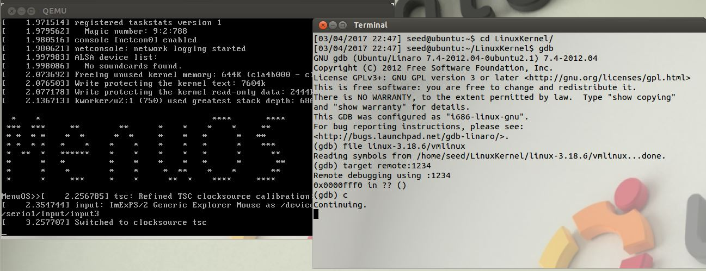设置断点：b sys_clone，b do_fork，b dup_task_struct，b copy_process，b copy_thread，b ret_from_fork
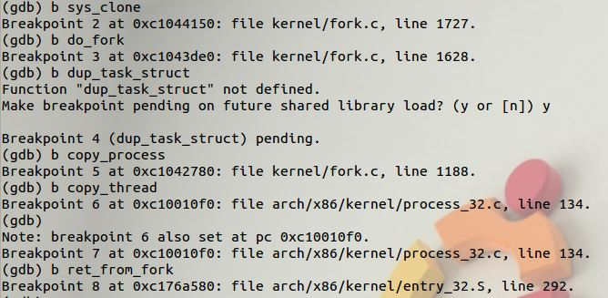运行到第一个断点sys_clone
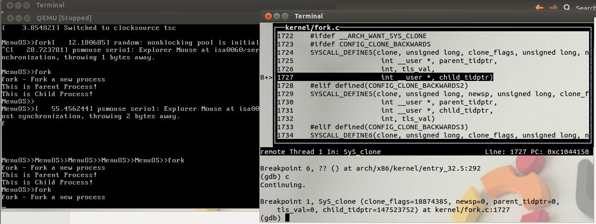这里有点小疑惑，明明显示的是syscall_define哪里是sys_clone？
原因如下图：syscall_define5是个宏定义，具体定义过程见下图，上图中的1724行有个参数clone，在下图的宏定义中一步步到198行定义为SyS_clone。具体过程参考Syscall系统调用Linux内核跟踪
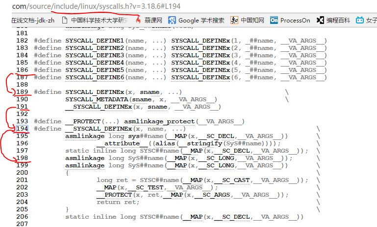往下翻一翻，看到在sys_clone中使用的是do_fork函数
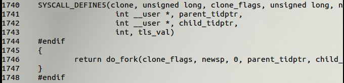接着跟踪，果不其然跳到了do_fork
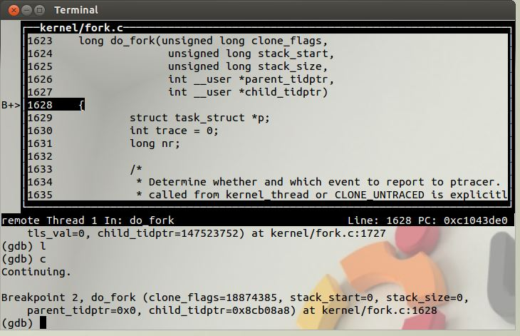在do_fork中可以看到调用了copy_process
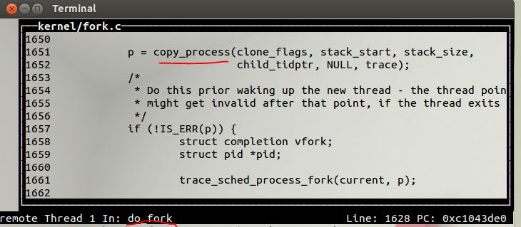接着跟踪，果不其然跳到了copy_process
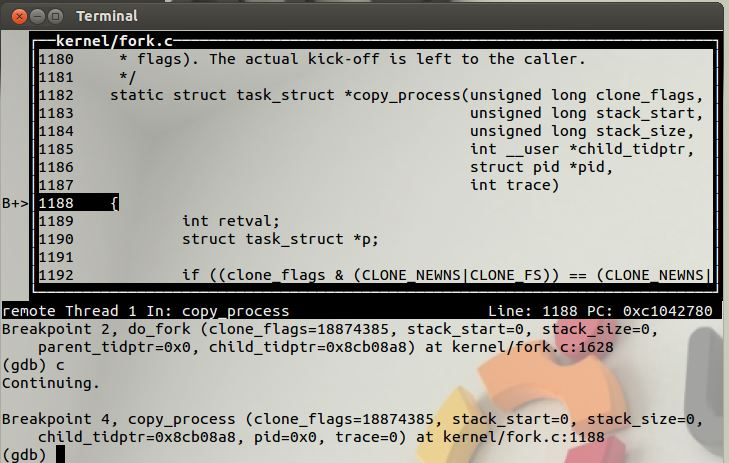在copy_process中可以看到调用了dup_task_struct
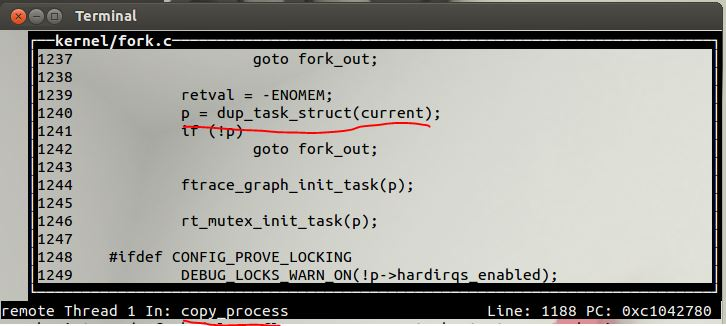但是在这里断点却停不下来，不知道为什么。单步执行到dup_task_struct函数
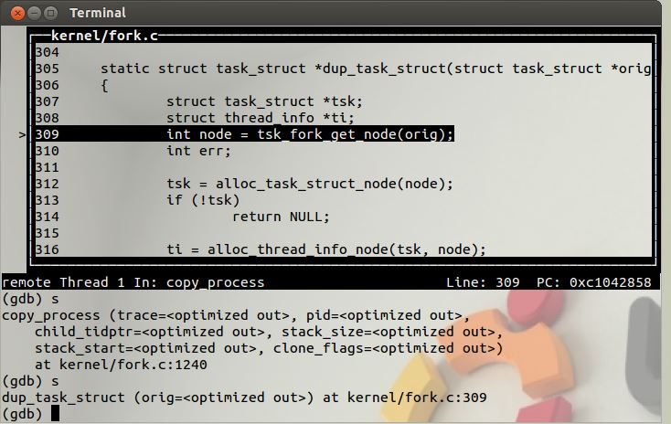继续执行到copy_thread函数
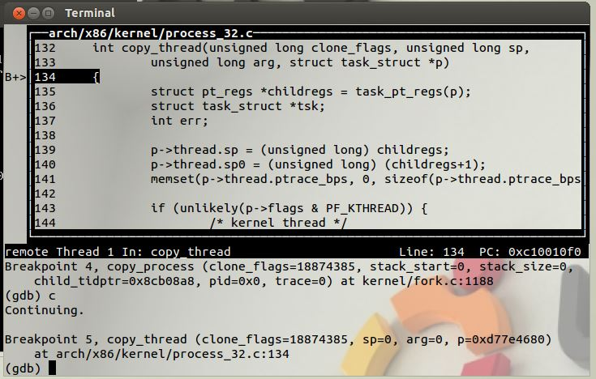 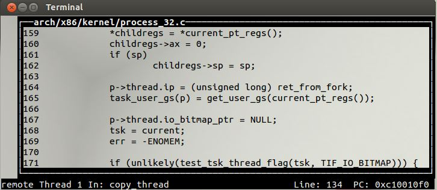继续执行到ret_from_fork
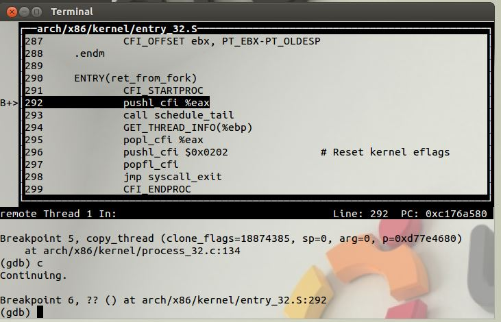继续执行发现函数执行完毕，控制台进行了输出
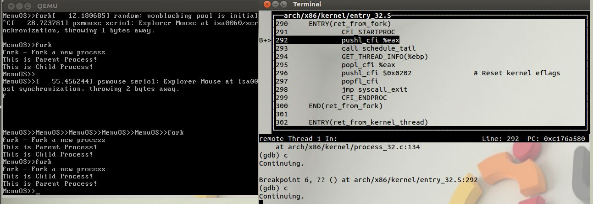代码分析
do_fork
long do_fork(unsigned long clone_flags,
unsigned long stack_start,
unsigned long stack_size,
int __user *parent_tidptr,
int __user *child_tidptr)
{
struct task_struct *p;
int trace = 0;
long nr;
// ...
// 复制进程描述符，返回创建的task_struct的指针
p = copy_process(clone_flags, stack_start, stack_size,
child_tidptr, NULL, trace);
if (!IS_ERR(p)) {
struct completion vfork;
struct pid *pid;
trace_sched_process_fork(current, p);
// 取出task结构体内的pid
pid = get_task_pid(p, PIDTYPE_PID);
//父进程读取子进程的pid作为fork的返回值
nr = pid_vnr(pid);
if (clone_flags & CLONE_PARENT_SETTID)
put_user(nr, parent_tidptr);
// 如果使用的是vfork，那么必须采用某种完成机制，确保父进程后运行
if (clone_flags & CLONE_VFORK) {
p->vfork_done = &vfork;
init_completion(&vfork);
get_task_struct(p);
}
// 将子进程添加到调度器的队列，使得子进程有机会获得CPU
wake_up_new_task(p);
// ...
// 如果设置了 CLONE_VFORK 则将父进程插入等待队列，并挂起父进程直到子进程释放自己的内存空间
// 保证子进程优先于父进程运行
if (clone_flags & CLONE_VFORK) {
if (!wait_for_vfork_done(p, &vfork))
ptrace_event_pid(PTRACE_EVENT_VFORK_DONE, pid);
}
put_pid(pid);
} else {
nr = PTR_ERR(p);
}
return nr;
}
do_fork处理了以下内容：调用copy_process，将当期进程复制一份出来为子进程，并且为子进程设置相应地上下文信息。如果是vfork调用,初始化vfork的完成处理信息（vfork必须保证子进程优先运行，执行exec，替换自己的地址空间）.调用wake_up_new_task，将子进程放入调度器的队列中，此时的子进程就可以被调度进程选中，得以运行。如果是vfork调用，需要阻塞父进程，子进程执行exec。
copy_process
/*
创建进程描述符以及子进程所需要的其他所有数据结构
为子进程准备运行环境
*/
static struct task_struct *copy_process(unsigned long clone_flags,
unsigned long stack_start,
unsigned long stack_size,
int __user *child_tidptr,
struct pid *pid,
int trace)
{
int retval;
struct task_struct *p;
// 分配一个新的task_struct，作为子进程的进程描述符。此时的p与当前进程的task仅仅是stack地址不同
p = dup_task_struct(current);
// 检查该用户的进程数是否超过限制
if (atomic_read(&p->real_cred->user->processes) >=
task_rlimit(p, RLIMIT_NPROC)) {
// 检查该用户是否具有相关权限，不一定是root
if (p->real_cred->user != INIT_USER &&
!capable(CAP_SYS_RESOURCE) && !capable(CAP_SYS_ADMIN))
goto bad_fork_free;
}
retval = -EAGAIN;
// 检查进程数量是否超过 max_threads，后者取决于内存的大小
if (nr_threads >= max_threads)
goto bad_fork_cleanup_count;
// 初始化自旋锁
// 初始化挂起信号
// 初始化定时器
// 完成对新进程调度程序数据结构的初始化，并把新进程的状态设置为TASK_RUNNING
retval = sched_fork(clone_flags, p);
// .....
// 复制所有的进程信息
// copy_xyz
// 初始化子进程的内核栈
retval = copy_thread(clone_flags, stack_start, stack_size, p);
if (retval)
goto bad_fork_cleanup_io;
if (pid != &init_struct_pid) {
retval = -ENOMEM;
// 这里为子进程分配了新的pid号
pid = alloc_pid(p->nsproxy->pid_ns_for_children);
if (!pid)
goto bad_fork_cleanup_io;
}
/* ok, now we should be set up.. */
// 设置子进程的pid
p->pid = pid_nr(pid);
// 如果是创建线程
if (clone_flags & CLONE_THREAD) {
p->exit_signal = -1;
// 线程组的leader设置为当前线程的leader
p->group_leader = current->group_leader;
// tgid是当前线程组的id，也就是main进程的pid
p->tgid = current->tgid;
} else {
if (clone_flags & CLONE_PARENT)
p->exit_signal = current->group_leader->exit_signal;
else
p->exit_signal = (clone_flags & CSIGNAL);
// 创建的是进程，自己是一个单独的线程组
p->group_leader = p;
// tgid和pid相同
p->tgid = p->pid;
}
if (clone_flags & (CLONE_PARENT|CLONE_THREAD)) {
// 如果是创建线程，那么同一线程组内的所有线程、进程共享parent
p->real_parent = current->real_parent;
p->parent_exec_id = current->parent_exec_id;
} else {
// 如果是创建进程，当前进程就是子进程的parent
p->real_parent = current;
p->parent_exec_id = current->self_exec_id;
}
// 将pid加入PIDTYPE_PID这个散列表
attach_pid(p, PIDTYPE_PID);
// 递增 nr_threads的值
nr_threads++;
// 返回被创建的task结构体指针
return p;
}
分析copy_process的大体流程：检查各种标志位（已经省略）。调用dup_task_struct复制一份task_struct结构体，作为子进程的进程描述符。检查进程的数量限制。初始化定时器、信号和自旋锁。初始化与调度有关的数据结构，调用了sched_fork，这里将子进程的state设置为TASK_RUNNING。复制所有的进程信息，包括fs、信号处理函数、信号、内存空间（包括写时复制）等。调用copy_thread，这又是关键的一步，这里设置了子进程的堆栈信息。为子进程分配一个pid。设置子进程与其他进程的关系，以及pid、tgid等。这里主要是对线程做一些区分。
dup_task_struct
static struct task_struct *dup_task_struct(struct task_struct *orig)
{
struct task_struct *tsk;
struct thread_info *ti;
int node = tsk_fork_get_node(orig);
int err;
// 分配一个task_struct结点
tsk = alloc_task_struct_node(node);
if (!tsk)
return NULL;
// 分配一个thread_info结点，其实内部分配了一个union，包含进程的内核栈
// 此时ti的值为栈底，在x86下为union的高地址处。
ti = alloc_thread_info_node(tsk, node);
if (!ti)
goto free_tsk;
err = arch_dup_task_struct(tsk, orig);
if (err)
goto free_ti;
// 将栈底的值赋给新结点的stack
tsk->stack = ti;
// ...
// 返回新申请的结点
return tsk;
}
dup_task_struct的代码要结合一个联合体的定义来分析。
union thread_union {
struct thread_info thread_info;
unsigned long stack[THREAD_SIZE/sizeof(long)];
};
在dup_task_struct中：先调用alloc_task_struct_node分配一个task_struct结构体。调用alloc_thread_info_node，分配了一个union，注意，这里不仅仅分配了一个thread_info结构体，还分配了一个stack数组。返回值为ti，实际上就是栈底。tsk->stack = ti;这句话，就是将栈底的地址赋给task的stack变量。执行完dup_task_struct之后，子进程和父进程的task结构体，除了stack指针之外，完全相同。
copy_thread
// 初始化子进程的内核栈
int copy_thread(unsigned long clone_flags, unsigned long sp,
unsigned long arg, struct task_struct *p)
{
// 获取寄存器信息
struct pt_regs *childregs = task_pt_regs(p);
struct task_struct *tsk;
int err;
// 栈顶 空栈
p->thread.sp = (unsigned long) childregs;
p->thread.sp0 = (unsigned long) (childregs+1);
memset(p->thread.ptrace_bps, 0, sizeof(p->thread.ptrace_bps));
// 如果是创建的内核线程
if (unlikely(p->flags & PF_KTHREAD)) {
/* kernel thread */
memset(childregs, 0, sizeof(struct pt_regs));
// 内核线程开始执行的位置
p->thread.ip = (unsigned long) ret_from_kernel_thread;
task_user_gs(p) = __KERNEL_STACK_CANARY;
childregs->ds = __USER_DS;
childregs->es = __USER_DS;
childregs->fs = __KERNEL_PERCPU;
childregs->bx = sp; /* function */
childregs->bp = arg;
childregs->orig_ax = -1;
childregs->cs = __KERNEL_CS | get_kernel_rpl();
childregs->flags = X86_EFLAGS_IF | X86_EFLAGS_FIXED;
p->thread.io_bitmap_ptr = NULL;
return 0;
}
// 将当前进程的寄存器信息复制给子进程
*childregs = *current_pt_regs();
// 子进程的eax置为0，所以fork的子进程返回值为0
childregs->ax = 0;
if (sp)
childregs->sp = sp;
// 子进程从ret_from_fork开始执行
p->thread.ip = (unsigned long) ret_from_fork;
task_user_gs(p) = get_user_gs(current_pt_regs());
return err;
}
copy_thread的流程如下：获取子进程寄存器信息的存放位置。对子进程的thread.sp赋值，将来子进程运行，这就是子进程的esp寄存器的值。如果是创建内核线程，那么它的运行位置是ret_from_kernel_thread，将这段代码的地址赋给thread.ip，之后准备其他寄存器信息，退出。将父进程的寄存器信息复制给子进程。将子进程的eax寄存器值设置为0，所以fork调用在子进程中的返回值为0。子进程从ret_from_fork开始执行，所以它的地址赋给thread.ip，也就是将来的eip寄存器。
总结
dup_task_struct中为其分配了新的堆栈。copy_process中调用了sched_fork，将其置为TASK_RUNNING。copy_thread中将父进程的寄存器上下文复制给子进程，这是非常关键的一步，这里保证了父子进程的堆栈信息是一致的。将ret_from_fork的地址设置为eip寄存器的值，这是子进程的第一条指令。